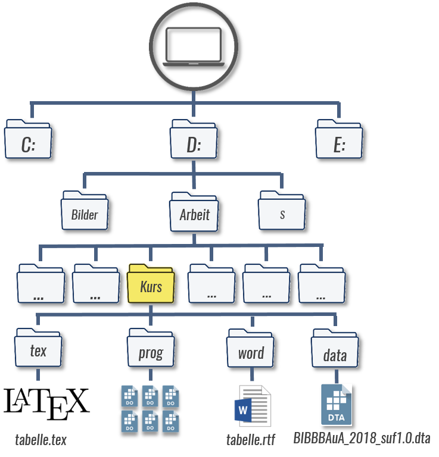

1 Tabellenexport mit Stata: Grundlagen & Pakete
Es gibt eine ganze Reihe von ados, welche einen Tabellenexport aus Stata erlauben.
Wir werden mit estout/esttab von Ben Jann arbeiten, das einige Vorteile bietet:
Zunächst können damit sowohl Deskriptions- als auch Regressionstabellen exportiert werden - man muss also nur eine Syntaxlogik lernen.
Dabei sind Exportbefehle für (fast) alle gängigen Deskriptionen und Regressionsmodelle vorhanden, inklusive Outputs von margins.
Außerdem können damit Tabellen sowohl in Word-, Latex- und auch Excel-Formate exportiert werden - auch hier ist (fast) die gleiche Syntaxlogik verwendbar.
Darüber hinaus bietet esttab die Möglichkeit einiger Formatierungseinstellungen.
Um estout/esttab zu verwenden, müssen wir es zunächst installieren:
ssc install estout, replaceDies sind die aktuellen Versionen:
which estout // check versions
*! version 3.24 30apr2021 Ben Jannwhich esttab // check version
*! version 2.1.0 19may2021 Ben Jann
*! wrapper for estoutMit estout/esttab können wir Tabellen mit zusammenfassenden Statistiken und Regressionsergebnissen zu erstellen, die leicht in oder importiert werden können oder in Word verwendet werden können.
Für die Latex-Verion ergibt sich der Vorteil, dass das ganze System dynamisch ist.
Wenn wir etwas in unserem Do-File ändern (z. B. eine bestimmte Gruppe weglassen, eine neue Variabe aufnehmen), dann werden die Ergebnisse automatisch in LaTeX aktualisiert.
Das kann eine Menge Zeit sparen, aber die Einrichtung in Latex ist sehr zeitintensiv und deren Details würden den Rahmen unseres Kurses sprengen.
Ich stelle daher hier eine (sehr einfache) Latexvorlage zur Verfügung, die versierte Latex-Nutzer*innen gerne an Ihre Bedürfnisse anpassen können.
1.1 Grundlagen: e() und r()
Grundsätzlich baut esttab auf die Postestimates e() auf.
Bei jedem Befehl werden im Hintergrund Werte in Matrizen und Skalere (also Zahlen) abgelegt, bspw. bei einem Regressionsmodell. Mit ereturn list können wir uns eine Liste der Postestimates ausgeben lassen:
quietly reg F518_SUF zpalter
ereturn listscalars:
e(N) = 16543
e(df_m) = 1
e(df_r) = 16541
e(F) = 105.3561454498825
e(r2) = .0063290815436915
e(rmse) = 3525.162828161657
e(mss) = 1309236899.97876
e(rss) = 205551251614.9366
e(r2_a) = .0062690083366028
e(ll) = -158590.4618746699
e(ll_0) = -158642.9792418738
e(rank) = 2
macros:
e(cmdline) : "regress F518_SUF zpalter"
e(title) : "Linear regression"
e(marginsok) : "XB default"
e(vce) : "ols"
e(depvar) : "F518_SUF"
e(cmd) : "regress"
e(properties) : "b V"
e(predict) : "regres_p"
e(model) : "ols"
e(estat_cmd) : "regress_estat"
matrices:
e(b) : 1 x 2
e(V) : 2 x 2
functions:
e(sample) Das Grundprinzip ist dann immer:
- Auswertungsbefehl
- Tabelle mit
esttaberstellen
Die Matrizen können wir mit matrix list, die Skalare mit scalar list + Name aufrufen, unter e(b) sind beispielsweise die Koeffizienten abgelegt:
matrix list e(b)e(b)[1,2]
zpalter _cons
y1 24.622534 2381.2797Bei vielen deskriptiven Befehlen werden die Kennzahlen hingegen als results in r() abgelegt.
An die Werte in r() kommen wird mit return list, ereturn list für e() ist dahingegen leer:
quietly su F518_SUF
ereturn list
return listscalars:
r(N) = 16635
r(sum_w) = 16635
r(mean) = 3532.108506161707
r(Var) = 12467451.86889181
r(sd) = 3530.927904799503
r(min) = 1
r(max) = 72000
r(sum) = 58756625Das bringt mit sich, dass wir für Deskriptionen meist mit dem Hilfsbefehl estpost die in r() abgelegten Ergebnisse in e() umwandeln müssen.
Grundsätzlich sind aber die Ergebnisse aus e() und r() alle in Tabellen mit esttab exportierbar.
1.2 Kurs-Setup

1.3 Übung
- Generieren Sie einmal
BIBBBAuA_2018_suf1.0_clean.dtamit Hilfe von00_init.dofür die weiteren Aufgaben. - Testen Sie einmal
return listunderturn listnachreg F518_SUF zpalterbzw.su zpalter